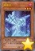
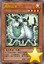
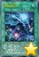
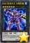

以下是可以在118.178.111.167 23333端口使用的先行卡的列表。下载补丁后即可使用。
使用方法：原版游戏下载补丁后解压至游戏文件夹，YGOMobile请自定义数据库（方法请查看压缩包内使用说明），暂不保证对其他版本的支持。
资料来源：任天堂世界论坛。
脚本作者：ygopro-pre-script，YGOPRO。目前所有脚本来自于以上这2个项目，在此对各自的贡献者表示感谢。
版权声明：转载请注明出自本页面，并完整保留附带的使用说明文档。如果您想对本项目进行修改，请移步这里，但我们建议您直接参与官方项目ygopro-pre-script。
星星和加号图标是Yusuke Kamiyamane的作品。
更新记录
- 2017-03-16 23:16
- 新卡：电子界工具、战线复归。
- 修复：霸王眷龙 凶饿毒能复制魔法·陷阱卡的问题。
- 2017-03-13 15:14
- 新卡：霸王眷龙 凶饿毒、紧急救急救命救援。
- 修复：暗黑界的洗脑的处理。
- 2017-03-06 23:43
- 修复：DD 恶妖提丰和DDD 怒涛大王 决策凯撒无法使用的问题。
- 2017-03-06 00:21
- 新卡：近期公布新卡23张。
- 注意：连接召唤相关规则暂未确定，目前相关的卡全部无法正常使用。
- 更新：删除已经正式更新的卡。
- 2017-02-18 00:36
- 更新：删除已经正式更新的卡。
- 2017-02-17 23:18
- 新卡：DDD 烈火大王 决策铁木真、巨噬者X。
- 2017-02-10 23:38
- 新卡：聚集的祈愿。
- 修复：地底恐魔的宿敌防御者在直接攻击时报错的问题。
- 修复：地底恐魔 巨魔龙骨对里侧表示的卡也有效的问题。
- 2017-02-03 23:47
- 新卡：RATE-EN(TCG911)新卡7张。
- 更新：优化部分卡图。
- 修复：秘谍女郎 雾女郎效果无法发动的问题。
- 2017-01-25 19:18
- 新卡：忒修斯海怪、秘谍女郎 米丝蒂、上千主上的契约。
- 更新：删除已经正式更新的卡。
- 更新：优化部分卡图。
- 2017-01-21 17:33
- 新卡：净化施效者、相互碰撞的灵魂、未来No.0 未来皇 霍普-未来斩、急袭猛禽-革命猎鹰-大空袭。
- 2017-01-21 02:38
- 修复：更新疾行机人 磁铁恶魔的处理，修复可以任意作为同调素材等问题。
- 2017-01-20 22:52
- 修复：爆竹鬼伤害数值错误的问题。
- 修复：十二兽的相克代替取除素材时报错的问题。
- 2017-01-20 00:54
- 更新：新字段更新为正式版。
- 更新：更新智天之神星龙额外灵摆召唤过程。
- 2017-01-19 18:30
- 修复：霸王龙 扎克灵摆效果应只限制场上的发动。
- 2017-01-19 18:08
- 修复：舞台旋转盖放的卡全部发动后仍不能发动其他场地魔法的问题。
- 2017-01-19 18:00
- 修复：古代的机械巨人-究极重击遗言效果无效的问题。
- 2017-01-19 17:52
- 修复：灰流丽不能无效明亮融合的问题。但暂时存在能无效明亮融合②效果的问题。
- 修复：幻影骑士团 失落护臂甲能以里侧表示怪兽为对象的问题。
- 2017-01-19 17:41
- 修复：杰作拼图不能超量召唤的问题。
- 修复：爆竹鬼结束阶段效果应为强制发动。
- 修复：灰流丽应能连锁自己发动的效果发动。
- 修复：急袭猛禽-异邦猎鹰遗言效果不取对象的问题。
- 修复：十二兽的相克代替素材效果无效的问题。
- 修复：幻煌龙的天涡装备怪兽转移控制权的场合仍能触发胜利效果的问题。
- 2017-01-15 21:46
- 新卡：杰作拼图。
- 更新：十二兽和真龙等部分卡增加提示。
- 2017-01-15 21:16
- 修复：失落世界不能成功代替战斗破坏的问题。
- 2017-01-15 20:55
- 修复：幻影骑士团 失落护臂甲防止战斗破坏效果无效的问题，和可以攻击表示特殊召唤的问题。
- 2017-01-15 20:18
- 修复：灰流丽不能无效摇晃的目光的问题。
- 2017-01-15 20:05
- 修复：十二兽 猴槌特殊召唤的怪兽可以作为超量素材的问题。
- 修复：十二兽 狗环对方回合结束阶段不会取除超量素材的问题。
- 2017-01-15 11:22
- 修复：食魂窃蛋龙被卡时点的问题。
- 2017-01-15 11:19
- 修复：抒情歌鸲-青玉燕超量素材效果不受王家长眠之谷影响的问题。
- 修复：霸王门 无限能以攻击力为0的怪兽为对象发动灵摆效果的问题。
- 修复：根据调整，超越融合应不能特殊召唤不再满足条件的融合素材（如凶饿毒融合龙的素材）。
- 2017-01-15 11:10
- 修复：小翼龙不在场上被破坏不能发动效果的问题。
- 2017-01-15 11:03
- 修复：失落世界报错的问题。
- 修复：疾行机人 磁铁恶魔报错的问题。（可以任意作为同调素材的问题待修复。）
- 2017-01-15 10:47
- 修复：灰流丽不能无效抽卡效果和暴走魔法阵和邻家割草等卡的问题。
- 2017-01-15 01:55
- 新卡：MACR(912)全部新卡，SR04，VJMP等新卡25张。
- 更新：优化部分卡图。
- 2017-01-11 18:42
- 修复：真龙拳士 雾动轰·铁拳不能把卡发动的问题。
- 2017-01-11 13:42
- 新卡：狒狒面包树。
- 修复：娱乐伙伴 天空魔术家和幻煌之都 帕西菲斯的处理。
- 修复：真龙皇 法·王·兽改为只限制怪兽效果的发动。
- 修复：真龙下级改为不能在伤害步骤触发效果。
- 2017-01-09 14:10
- 新卡：娱乐决斗、融合回收工厂。
- 更新：旧卡的新字段等数据。
- 2017-01-02 23:16
- 修复：真龙的继承抽卡数量应统计双方送去墓地的数量。
- 2016-12-31 20:23
- 修复：娱乐伙伴 天空魔术家上升攻击力被无效后不重置的问题。
- 修复：抒情歌鸲-独立夜莺攻击力上升的处理。
- 修复：真龙凰的使徒①效果处理时不在场上存在也可以处理的问题，和对象卡不在墓地也会被返回卡组的问题。
- 2016-12-30 19:07
- 修复：真龙战士 点火烈·炽热和真龙拳士 雾动轰·铁拳在场上没有格子时也能选择把卡发动的问题。
- 修复：抒情歌鸲-独立夜莺不识别抒情歌鸲-吟诵椋鸟的问题。
- 2016-12-29 23:44
- 新卡：抒情歌鸲-独立夜莺、灵摆多福鸟、十二兽 鸡拳。
- 修复：魔术师的左手和右手没有把效果无效也会把卡破坏的问题。
- 修复：真龙的默示录①效果不能在伤害步骤发动的问题。
- 2016-12-28 09:46
- 修复：真龙怪兽在没有怪兽可解放的场合不能使用其他卡的效果解放魔陷上级召唤的问题。
- 修复：真龙的默示录发动次数与真龙皇的复活冲突的问题。
- 2016-12-28 01:02
- 新卡：真龙剑皇 卓辉星·拼图、真龙凰的使徒、真龙的默示录。
- 更新：真龙怪兽应能解放里侧表示的永续魔法·陷阱卡上级召唤。
- 修复：霸王龙 扎克部分场合不能使用异色眼融合融合召唤的问题。
- 2016-12-26 18:16
- 更新：部分卡涉及王家长眠之谷的处理。
- 修复：娱乐伙伴 U合石人无法使用的问题。
- 修复：决斗者降临无法检索灵摆融合的问题。
- 2016-12-26 12:49
- 修复：娱乐伙伴 U合石人不能把墓地的卡加入手卡的问题，和不能使用连锁素材融合的问题。
- 修复：幻影骑士团 诅咒标枪效果可以在伤害步骤伤害计算后发动的问题。
- 修复：雾动机龙咆哮灵摆召唤限制只持续1回合的问题。
- 2016-12-25 21:59
- 新卡：巨大要塞 泽洛斯、娱乐伙伴 U合石人、幻影骑士团 诅咒标枪、神数的星战、雾动机龙咆哮。
- 更新：优化部分卡图。
- 2016-12-25 14:56
- 修复：更新部分融合卡的处理。
- 2016-12-25 13:51
- 更新：删除已经正式更新的卡。
- 2016-12-24 10:23
- 修复：真龙的继承抽卡数量错误的问题。
- 2016-12-24 10:13
- 修复：部分场合自己发动魔法·陷阱卡的效果的场合也会触发幻煌之都 帕西菲斯②效果的问题。
- 2016-12-23 20:12
- 修复：宙读之魔术士不能选择破坏怪兽的同名卡加入手卡的问题。
- 2016-12-23 09:42
- 更新：根据调整，宙读之魔术士应只能选择墓地·额外卡组表侧表示·除外的怪兽的同名卡加入手卡。
- 更新：根据调整，虹彩之魔术师应不能在不能进入战斗阶段的场合发动灵摆效果。
- 更新：根据调整，时空之灵摆读阵没有把2张卡破坏时，应能选任意卡试图送去墓地。
- 2016-12-22 11:18
- 修复：疾行机人 56飞机只能选自己怪兽下降攻击力的问题。
- 2016-12-22 11:11
- 修复：白翼之魔术师灵摆效果选择不使用后不能再次使用的问题。
- 修复：幻煌之都 帕西菲斯在部分场合可以在已经特殊召唤了衍生物的场合发动②效果的问题。
- 2016-12-21 18:00
- 新卡：娱乐伙伴 小判龙、影灵衣巫女 艾莉娅儿。
- 修复：真龙骑将 得律阿斯3世会使魔法·陷阱卡也不能成为对象和破坏的问题。
- 修复：流星音击在不能进行战斗阶段的回合也能发动的问题。
- 2016-12-21 00:01
- 更新：优化部分卡图。
- 修复：试图融合霸王龙 扎克时可能崩溃的问题。
- 修复：急袭猛禽-异邦猎鹰种族错误的问题。
- 2016-12-20 11:26
- 修复：双头共鸣者墓地效果无效的问题。
- 2016-12-19 22:45
- 更新：霸王龙 扎克的处理。
- 修复：新卡列表中缺少的卡。
- 2016-12-19 22:29
- 更新：优化部分卡图。
- 修复：霸王龙 扎克的处理回退到上一个版本。
- 修复：同调呼唤的处理。
- 2016-12-19 14:47
- 修复：双头共鸣者①效果无效的问题。
- 2016-12-18 23:43
- 修复：天轮之双星道士特殊召唤的怪兽应为守备表示。
- 修复：白之衣在自己的所有怪兽攻击时都会发动效果的问题。
- 2016-12-18 23:25
- 新卡：诀别、双头共鸣者、宇宙耀变龙、急袭猛禽-异邦猎鹰。
- 2016-12-18 11:29
- 修复：真龙骑将 得律阿斯3世离场效果不能在伤害步骤发动的问题。
- 2016-12-18 11:26
- 修复：破坏龙 甘多拉-烈光闪不识别自身为甘多拉卡的问题。
- 修复：霸王门 零伤害变0效果无效的问题。
- 更新：同调呼唤的处理。
- 更新：霸王龙 扎克的处理。
- 2016-12-18 01:37
- 更新：优化部分卡图。
- 修复：真龙骑将 得律阿斯3世不识别旧「真龙」卡的问题。
- 修复：幽丽的幻泷发动提示问号的问题，和二效果无法使用的问题。
- 2016-12-17 19:48
- 新卡：PP19新卡5张，MACR新卡5张。
- 更新：优化部分卡图。
- 修复：霸王龙 扎克无法作为灵摆刻度灵摆召唤的问题。
- 修复：灵摆融合无法使用灵摆区素材融合始祖龙 古龙和凶饿毒融合龙的问题。
- 2016-12-17 17:47
- 修复：更新霸王龙 扎克的融合过程，尝试修复奇迹同调融合等卡出错的问题。
- 2016-12-17 14:54
- 修复：白之衣离场没有伤害的问题。
- 2016-12-17 14:34
- 修复：霸王龙 扎克可以用异色眼融合从额外卡组使用4个素材融合召唤的问题。
- 2016-12-17 14:07
- 修复：霸王门 无限特殊召唤的怪兽不能正常使用的问题。
- 2016-12-16 17:47
- 修复：幻煌龙的浸涡墓地效果无效的问题。
- 2016-12-16 16:45
- 新卡：白之衣。
- 更新：迪亚邦德之核上升攻击力应为600。
- 更新：优化部分卡图。
- 2016-12-16 15:45
- 修复：宙读之魔术士和刻读之魔术士不识别旧卡的「超量龙」「同调龙」「融合龙」字段的问题。
- 2016-12-16 15:07
- 修复：霸王眷龙 暗黑亚龙灵摆效果发动后不能特殊召唤其他属性怪兽的问题。
- 修复：更新霸王龙 扎克的融合过程，修复不能奇迹同调融合的问题。
- 2016-12-16 12:57
- 修复：幻煌之都 帕西菲斯衍生物效果无法发动的问题。
- 2016-12-16 12:36
- 修复：幻煌之都 帕西菲斯通常召唤和特殊召唤成功时可以各自发动一次效果的问题。
- 2016-12-16 11:30
- 修复：幻煌龙的战涡墓地效果无效的问题。
- 修复：流星音击不存在于墓地时也能代替解放的问题。
- 2016-12-16 09:36
- 修复：幻煌之都 帕西菲斯未被当作「海」的问题。
- 2016-12-16 09:18
- 修复：流星音击无法使用的问题。
- 修复：幻煌之都 帕西菲斯②效果发动时点错误的问题。
- 修复：幻煌龙的浸涡应为取对方场上怪兽为对象，修复墓地效果无效的问题。
- 2016-12-16 00:34
- 新卡：VJMP公布新卡共14张。
- 2016-12-12 11:58
- 修复：娱乐伙伴 机炮食尸鬼融合素材错误的问题。
- 2016-12-11 21:00
- 新卡：娱乐伙伴 机炮食尸鬼。
- 2016-12-10 19:30
- 修复：娱乐伙伴 天空魔术家发动的提示显示为问号的问题。
- 2016-12-10 13:47
- 修复：破坏龙 甘多拉-烈光闪效果无法使用的问题。
- 修复：娱乐伙伴 凶猛蔷薇怪兽效果无法使用的问题。
- 修复：宙读之魔术士在自己场上以外的卡被破坏时也能发动效果的问题。
- 2016-12-09 23:46
- 新卡：破坏龙 甘多拉-烈光闪、娱乐伙伴 歌谣蔷薇、娱乐伙伴 凶猛蔷薇、魔玩具·冒失鬼。
- 2016-12-07 13:11
- 修复：抒情歌鸲-吟诵椋鸟未被识别为抒情歌鸲卡的问题。
- 2016-12-05 23:44
- 更新：删除已经正式更新的卡。
- 修复：白翼之魔术师字段错误。
- 2016-12-02 16:14
- 修复：魔术师的再演②效果无效的问题。
- 2016-12-01 22:42
- 新卡：摩天一击、娱乐伙伴、DDD、魔术师等新卡共10张。
- 修复：迪亚邦德之核效果能多次发动的问题。
- 修复：真龙皇 法·王·兽会使不受效果影响的怪兽也不能发动效果的问题。
卡片列表
| 卡图 | 卡名 | 效果 |
|---|---|---|
| 娱乐伙伴 纸牌守卫者 | [怪兽|效果|灵摆] 岩石/地 [★3] 1000/1000 8/8 ←8 【灵摆】 8→ ①：1回合1次，以自己场上1只表侧守备表示怪兽为对象才能发动。那只怪兽的守备力变成自己场上的全部表侧守备表示怪兽的原本守备力合计数值。 【怪兽效果】 ①：这张卡的守备力上升这张卡以外的自己场上的「娱乐伙伴」怪兽的原本守备力的合计数值。 | |
| 锋利小鬼·棉花吞噬者 | [怪兽|效果|灵摆] 恶魔/暗 [★7] 2400/1600 1/1 ←1 【灵摆】 1→ ①：自己场上的融合怪兽的攻击力上升300。 ②：1回合1次，自己场上有「魔玩具」融合怪兽融合召唤的场合才能发动。自己从卡组抽1张。 【怪兽效果】 「锋利小鬼·棉花吞噬者」的怪兽效果1回合只能使用1次。 ①：这张卡特殊召唤成功的场合才能发动。给与对方为自己墓地的「魔玩具」怪兽数量×200伤害。 | |
| 电子界工具 | [怪兽|效果] /光 [★4] 1400/300 这个卡名的②的效果1回合只能使用1次。 ①：这张卡召唤成功时，以自己墓地1只2星以下的怪兽为对象才能发动。那只怪兽守备表示特殊召唤。这个效果特殊召唤的怪兽的效果无效化。 ②：这张卡从场上送去墓地的场合才能发动。在自己场上把1只「工具衍生物」（电子界族·光·2星·攻/守0）特殊召唤。 | |
| 比特机灵 | [怪兽|通常] /地 [★2] 200/2000 电子空间发现的新品种。它的信息量非常少。 | |
|  | 网络龙 | [怪兽|效果] /暗 [★3] 1400/1200 ①：这张卡召唤成功时才能发动。从手卡·卡组把1只2星以下的通常怪兽守备表示特殊召唤。 |
|  | 内存云羊 | [怪兽|效果] /光 [★4] 1800/1000 这个卡名的效果1回合只能使用1次。 ①：把自己场上1只怪兽解放，以自己墓地1只电子界族怪兽为对象才能发动。那只怪兽特殊召唤。 |
| 连接杀戮者 | [怪兽|效果] /地 [★5] 2000/600 ①：自己场上没有怪兽存在的场合，这张卡可以从手卡特殊召唤。 ②：1回合1次，把最多2张手卡丢弃，以丢弃数量的场上的魔法·陷阱卡为对象才能发动。那些卡破坏。 | |
|  | 电脑网宇宙 | [魔法|场地] （注：连接召唤暂未实现，此卡无法使用） ①：自己场上的连接怪兽的攻击力上升300。 ②：1回合1次，以自己或者对方的墓地1只怪兽为对象才能发动。那只怪兽回到持有者卡组。 ③：场上的这张卡被效果破坏的场合发动。额外怪兽区域的怪兽全部送去墓地。 |
 | 解码语者 | [怪兽|效果|超量] /暗 [☆3] 2300/133 LINK-3 [↑][↙][↘] （注：连接召唤暂未实现，此卡无法使用） 效果怪兽2只以上 ①：这张卡的攻击力上升这张卡所连接区的怪兽数量×500。 ②：自己场上的卡为对象的对方的魔法·陷阱·怪兽的效果发动时，把这张卡所连接区1只自己怪兽解放才能发动。那个发动无效并破坏。 |
| 蜜蜂机器人 | [怪兽|效果|超量] /光 [☆2] 1900/40 LINK-2 [←][→] （注：连接召唤暂未实现，此卡无法使用） 电子界族怪兽2只 ①：这张卡所连接区的怪兽不会成为效果的对象，不会被战斗破坏。 | |
 | 连接蜘蛛 | [怪兽|效果|超量] /地 [☆1] 1000/2 LINK-1 [↓] （注：连接召唤暂未实现，此卡无法使用） 通常怪兽1只 ①：1回合1次，自己主要阶段才能发动。从手卡把1只4星以下的通常怪兽在这张卡所连接区特殊召唤。 |
 | 电子界男巫 | [怪兽|效果] /光 [★4] 1800/800 ①：1回合1次，以对方场上1只攻击表示怪兽为对象才能发动。那只怪兽变成守备表示。这个效果变成守备表示的回合，自己怪兽只能向作为对象的怪兽攻击，自己的电子界族怪兽向作为对象的守备表示怪兽攻击的场合，给与对方为攻击力超过那个守备力的数值的战斗伤害。 |
| DD 恶妖提丰 | [怪兽|效果] 恶魔/暗 [★7] 2300/2800 这个卡名的①②的效果1回合各能使用1次。 ①：这张卡召唤成功时，把自己场上1只「DD」怪兽解放才能发动。从卡组把1只7星「DDD」怪兽特殊召唤。 ②：这张卡被送去墓地的回合的自己主要阶段才能发动。8星以上的「DDD」融合怪兽卡决定的包含这张卡的融合素材怪兽从自己墓地除外，把那1只融合怪兽从额外卡组融合召唤。 （注：效果暂未确定） | |
 | 暮光道将军 简 | [怪兽|效果] 战士/暗 [★4] 1800/1200 ①：1回合1次，从自己的手卡·墓地把1只「光道」怪兽除外，以场上1只表侧表示怪兽为对象才能发动。那只怪兽的攻击力·守备力直到回合结束时下降除外的怪兽的等级×300。 ②：1回合1次，这张卡以外的自己的「光道」怪兽的效果发动的场合发动。从自己卡组上面把2张卡送去墓地。 |
 | 惩戒之龙 | [怪兽|效果] 龙/暗 [★8] 3000/2600 这张卡不能通常召唤。除外的自己的「光道」怪兽是4种类以上的场合才能特殊召唤。 ①：1回合1次，支付1000基本分才能发动。「光道」怪兽以外的双方墓地的卡以及表侧表示除外中的卡全部回到持有者卡组。这个效果在对方回合也能发动。 ②：1回合1次，自己的「光道」怪兽的效果发动的场合发动。从自己卡组上面把4张卡送去墓地。 |
 | 救援雪貂 | [怪兽|效果] 兽/地 [★4] 300/100 （注：连接召唤暂未实现，此卡无法使用） 这个卡名的效果1回合只能使用1次。 ①：让场上的这张卡回到持有者卡组才能发动。等级合计直到变成6星为止从卡组选「救援雪貂」以外的怪兽任意数量在作为连接怪兽所连接区的自己场上特殊召唤。这个效果特殊召唤的怪兽的效果无效化，结束阶段破坏。 |
 | 怒气冲冲的队长 | [怪兽|效果] 战士/地 [★1] 400/1200 ①：这张卡召唤成功时，以自己墓地1只4星以下的怪兽为对象才能发动。那只怪兽守备表示特殊召唤。这个效果特殊召唤的怪兽的效果无效化。 |
 | 霸王眷龙 凶饿毒 | [怪兽|效果|融合] 龙/暗 [★8] 2800/2000 暗属性灵摆怪兽×2 这张卡用融合召唤以及以下方法才能特殊召唤。●把自己场上的上记卡解放的场合可以从额外卡组特殊召唤（不需要「融合」）。 ①：1回合1次，以这张卡以外的自己或者对方的场上·墓地1只怪兽为对象才能发动。直到结束阶段，这张卡得到和那只怪兽相同的原本的卡名·效果。这个回合，自己怪兽向守备表示怪兽攻击的场合，给与对方为攻击力超过那个守备力的数值的战斗伤害。 |
 | DDD 疾风大王 决策亚历山大 | [怪兽|效果|同调] 恶魔/风 [★10] 3000/2500 调整＋调整以外的怪兽1只以上 这个卡名的②的效果1回合只能使用1次。 ①：场上有「DDD」怪兽3只以上存在的场合，这张卡的攻击力上升3000。 ②：这张卡在怪兽区域存在，自己场上有这张卡以外的「DD」怪兽召唤·特殊召唤的场合，以自己墓地1只「DD」怪兽为对象才能发动。那只怪兽特殊召唤。 |
|  | DDD 怒涛大王 决策凯撒 | [怪兽|效果|超量] 恶魔/水 [☆6] 2800/1800 恶魔族6星怪兽×2 ①：包含把怪兽特殊召唤效果的怪兽的效果·魔法·陷阱卡发动时，把这张卡1个超量素材取除才能发动。那个发动无效并破坏。那之后，可以选这张卡以外的自己场上1只「DD」怪兽，那只怪兽和这张卡的攻击力直到回合结束时上升1800。 ②：这张卡从场上送去墓地的场合才能发动。从卡组把1张「契约书」卡加入手卡。 （注：效果暂未确定） |
 | 电影之骑士 盖亚剑士 | [怪兽|超量] 机械/地 [☆3] 2600/42 LINK-3 [←][→][↓] （注：连接召唤暂未实现，此卡无法使用） 怪兽2只以上 |
 | 金毛妇 | [怪兽|效果|超量] 兽/地 [☆2] 1400/5 LINK-2 [↙][↘] （注：连接召唤暂未实现，此卡无法使用） 地属性怪兽2只 这个卡名的②的效果1回合只能使用1次。 ①：只要这张卡在怪兽区域存在，场上的地属性怪兽的攻击力·守备力上升500，风属性怪兽的攻击力·守备力下降400。 ②：这张卡被战斗·效果破坏的场合，以自己墓地1只地属性怪兽为对象才能发动。那只怪兽加入手卡。 |
 | 紧急救急救命救援 | [魔法] 这个卡名的卡在1回合只能发动1张。 ①：自己基本分比对方少的场合才能发动。从卡组把3只攻击力300/守备力100的兽族怪兽给对方观看，对方从那之中选1只。那1只怪兽加入自己手卡，剩余回到卡组。 |
 | 王车连接 | [魔法|场地] （注：连接召唤暂未实现，此卡无法使用） ①：1回合1次，自己主要阶段以场上1只连接怪兽为对象才能发动。那只怪兽的位置向那只怪兽所连接区的主要怪兽区域移动（不能向从那只怪兽来看的对方场上移动）。 ②：1回合1次，自己主要阶段才能发动。选自己的主要怪兽区域2只连接怪兽或者对方的主要怪兽区域2只连接怪兽，那些位置交换。 |
 | 暗黑界的洗脑 | [陷阱|永续] ①：自己手卡有3张以上存在，对方怪兽的效果发动时，以场上1只「暗黑界」怪兽为对象才能把这个效果发动。作为对象的怪兽回到持有者手卡，那个对方的效果变成「对方手卡随机选1张丢弃」。 |
 | 绝缘的落穴 | [陷阱] （注：连接召唤暂未实现，此卡无法使用） ①：连接怪兽连接召唤成功时才能发动。场上的不在连接状态的怪兽全部破坏。 |
 | 战线复归 | [陷阱] ①：以自己墓地1只怪兽为对象才能发动。那只怪兽守备表示特殊召唤。 |
常见问题
Q.某张卡有BUG！
A.请到页面下方留言反馈，或联系233服QQ群里的尸体233（QQ：921439818）。
Q.卡片右下角的黄色星星是什么意思？
A.表示那张卡暂未有实卡，是先行卡。其卡片密码暂时使用临时密码（1开头的9位数）。
这种卡需要在23333端口才能使用。此外部分使用同样密码体系的服务器（不包括Checkmate）也可以使用。
实卡发售后，对应的带星星的先行卡会失效，请更新游戏，来获取正式的版本。
Q.卡片右下角的绿色加号是什么意思？
A.表示那张卡已有实卡但YGOPRO的国内官方版本暂未更新，是本补丁增加的卡片。其卡片密码是正式密码。
这种卡在233端口更新前只能在23333端口使用。但其他更新速度较快的服务器（包括Checkmate）一般也可使用。
一般这种卡不久就会正式更新到233服，请关注公告，更新后请下载YGOPRO的正式更新来获取那些卡。
Q.为什么安装了最新的先行卡补丁仍然没有某些卡？
A.本补丁只包含先行卡，不包含已经正式更新的卡。
请下载YGOPRO的正式更新来获取那些卡。
Q.为什么我更新先行卡补丁之后反而有卡消失了？
A.因为那些卡已经不再是先行卡了，本补丁不再包含它们。
请下载YGOPRO的正式更新来获取那些卡。
Q.安装后没有新卡？
A.本补丁附带新卡列表的卡组。
请确保你把文件解压到了游戏文件夹里，而不是新建了一个文件夹。
电脑版需要重启游戏才能重新载入数据库。
手机版需要自定义数据库，详见使用方法。
Q.安装后新卡没有卡图？
A.请确保你解压出来了压缩包里所有文件，不能只解压1个文件。
Q.手机版找不到sdcard文件夹？
A.部分手机可能位于storage或mnt文件夹里。
Q.手机版提示没有权限？
A.同上，换个文件夹试试。
Q.某张卡不能用，提示无效卡组？
A.本补丁的最新版只能与23333端口完美兼容。
请下载YGOPRO的正式更新，并更新先行卡补丁到最新版，把端口改为23333，才能正常使用先行卡。
Q.搜索卡片时发现有重复卡片？
A.因为本补丁是先行卡补丁，正式更新的卡片可能会与本补丁的卡片重复。删除或更新本补丁即可。
Q.电脑版怎么删除补丁？
A.删除expansions文件夹或其中pre-release.cdb即可。
Q.手机版怎么删除补丁？
A.点自定义卡片数据库下面的重置卡片数据库。
如果你打过其他的补丁，还需要再自定义一次数据库，选择cards.cdb。